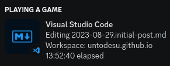
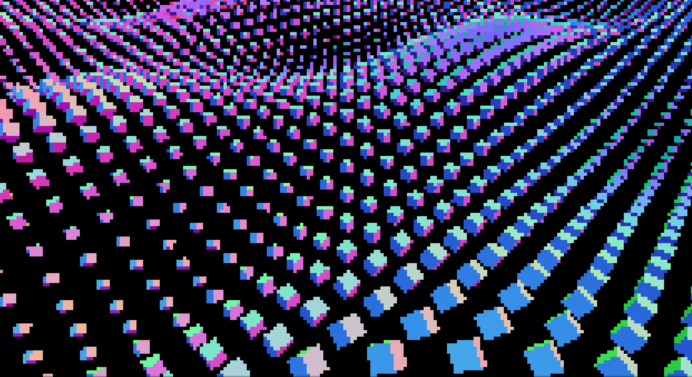

So here we are: after the site stalling with nice vibing shapes made with Three.JS for about a half-year, a new workflow on translating markdown blogposts into static html appeared: the feared pair of beasts called sblg and lowdown!
First impressions
To be honest, it was hard to comprehend initially but turned into an all-powerful beast as soon as I actually invested my time into making something remotely resembling a nice makefile script. And I am not talking about two or three hours, I am talking about a classic hyperfixation moment of 13 whole hours:

Optimizing things
Since any kind of 3D rendering is expensive, I decided
to add a little bit of optimization code to the existing
shape rendering code:
1. Reduced the overall amount of shapes
2. Shapes are now vibing much nicer
3. Whenever the window loses focus or the user switches tabs, pixel density drops and framerate gets limited to about 5 frames per second.
So when you are not looking, things look like this:

Results
The whole blog can be re-generated by running a single GNU make command and is pretty optimized for something that constantly renders 3D graphics just as a background noise, so I am pretty happy with how things turned out.
For those who liked to just stare into the endless wave loop, the pure blog-less wave staring experience is available in-situ, just click here or at the Waves button in the header!
With the new semester of university starting, I plan on writing more posts, possibly related to various RF engineering topics but I also won’t forget programming side of things: I really want to get things done with the brand-new rewrite of Voxeren (previously called Voxelius) and put up a new devlog since the old one is now a lost media…
Generic Markdown test
This text is just a plain old text!
This text is italic out of all things!
This text appears to be bolding!
Scratch this, it was a bad joke…
Mixing things up is always fun
Counter Internet censorship with Tor!
Nice hustle, ‘tons-a-fun’! Next time, eat a salad!
$400,000 to fire that gun, huh? Yeah, money well spent!
Them $200 bullets ain’t so hot when they don’t hit nuthin’, are they?
I… Eat… Your… Sandwiches. I eat ‘em up!
- This is a numbered list
- This still appears to be a numbered list…
- Never gonna give you up
- A bullet point list
- Never gonna let you down
Level 2 header (bigger than h1)
Level 3 header
Level 4 header
html/post.%.xml: posts/%.md
truncate -s 0 $@
printf "<article data-sblg-article=\"1\"" >> $@
printf " data-sblg-tags=\"`lowdown -X tags $<`\"" >> $@
printf " data-sblg-title=\"`lowdown -X title $<`\"" >> $@
printf " data-sblg-author=\"`lowdown -X author $<`\"" >> $@
printf " data-sblg-datetime=\"`lowdown -X datetime $<`\"" >> $@
printf " data-sblg-aside=\"`lowdown -X aside $<`\">" >> $@
lowdown $< >> $@
printf "</article>" >> $@
An identity matrix:
| 1 | 0 | 0 | 0 |
|—|—|—|—|
| 0 | 1 | 0 | 0 |
| 0 | 0 | 1 | 0 |
| 0 | 0 | 0 | 1 |
So lowdown actually struggles with tables huh?!
The more you know…